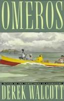
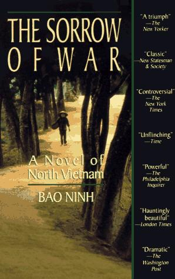
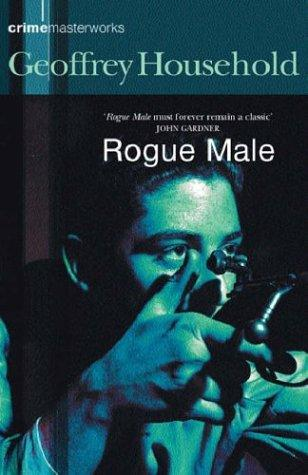
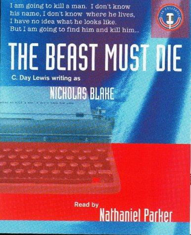

weekly digest
Week 2026-37
Recommendations for the week of 7 September 2026.
Three different growth edges this week, deliberately steering clear of the anthropology-and-probability grooves the highbrow picks have worn lately. The near-empty poetry shelf gets a book-length epic that also lands the translated/non-Western register on the Caribbean for the first time. Translated literary fiction reaches Vietnam — the war told, fractured and unsparing, from the side the Western canon rarely hears. And the narrative-history thread pushes well outside the Greece/Rome-and-World-Wars veins into a global history that moves the world's axis east. The comfort picks stay in the well-loved veins — big-idea SF, the lean first-person thriller, Golden-Age crime — but reach entirely for fresh authors: a Hugo-winning space opera built as nested tales, a foundational chase novel, and an inverted mystery that opens with the confession.
Highbrow



Lowbrow


